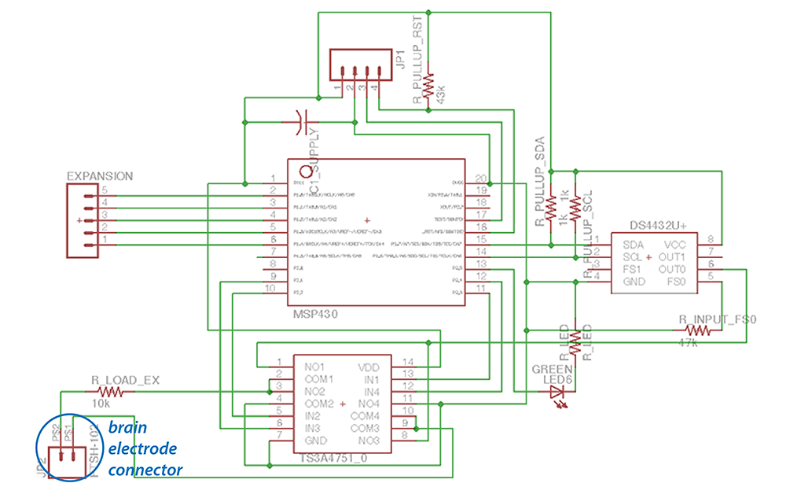

[NOT FINAL] Lab #9: Deep Brain Stimulation Case Study
Deep Brain Stimulation Background

Deep brain stimulation is an FDA-approved treatment for Parkinson’s disease and essential tremors. As the name implies, DBS therapy involves the implantation of electrodes into structures deep in the brain (“deep” as opposed to surface or non-invasive transcranial stimulation, and “brain” as opposed to stimulation of peripheral nerves). As shown in the picture to the left, A DBS system comprises to elements - the electrodes which are implanted into the brain and deliver charge to the tissue, and the “implanted pulse generator” (IPG) which contains a battery and generates and controls the stimulation pulses. In this course, we have been studying the implementation of small, low power embedded systems. An IPG is an excellent example of a very specialized embedded system which must be both small and ulta-low power. The goal of this lab is for you to learn more about devices which interface with the nervous system and to consider the design of an IPG.
If you are interested in learning more about DBS, a good review is Oluigbo et al, IEEE Reviews in Bioengineering 2012. If you are interested in learning more about the mechanisms of DBS in Parkinson’s disease, a good review is Johnson et al, NeuroTherapeutics 2008.
Exercises (10 pts each)
- Read this IEEE Spectrum article from 2006. What are two stimulation therapies that are FDA approved for treating depression. What are two other therapies that are being tested for efficacy in depressed patients (as of 2006 - note that AFAIK, these tests are on-going).
- Read this IEEE Spectrum article from 2015 for background. To treat seizures, Company A and Company B both have systems which control stimulation in “closed loop”, i.e., in response to some detected signature. Assume the Company A system is measuring variability in heartrate, and the Company B system is measuring the spectral power in a “local field potential” rhythm with a center frequency of ~30 Hz. Which system do you think requires more power for data acquisition and why? Which system do you think requires more power for signal processing? Which system do you think will have lower latency?
- Let’s try to reverse engineer the power consumption of a commercial IPG. For this and the next question, make reference to this programming manual for some of the Medtronic IPGs. Look at the energy use data in Table 13 (for the Kinetra system from Medtronic). If the device consumes some ammount of constant power (due to digital blocks) plus some amount of variable power depending on stimulation intensity, we would expect the increase in energy consumption with increasing stimulation current and pulse width to rise with a slope of approximately one. Is that what you observe? Why might this not be the case?
- Some dystonias are treated with DBS at 40 Hz rather than the standard 130 Hz for Parkinson’s disease. What would you expect the difference in battery life to be between the two conditions for a Kinetra stimulator set to 5 mA stimulation and 60 us pulse widths (continuous stimulation)?
Design Study (70 pts)
Below is the schematic for a simple MSP430-based system for delivering constant-current stimulation (i.e., an IPG). Your task is to evaluate the design using your knowledge of the MSP430 and by reading the data sheets for the two other integrated circuits, the current-mode digital to analog converter (DS4432) and the digitally-controlled switch (TS3A4751).

The goal of the IPG is to deliver biphasic current pulses, as shown below, with a programmable frequency and current amplitude.

For the purposes of this lab, you can assume that we want 130 Hz stimulation and 50 μA pulses with 60 μs pulse width. The DS4432 is a digitally-controlled current source, but cannot generate biphasic pulses. In order to generate biphasic pulses the design relies on a switch matrix as in Figure 4 in Farahamand 2012. Even though the data sheet does not specify this, you may assume that the amount of time the DS4432 requires to turn on is equivalent to the amount of time it takes to transmit the relevant I2C commmands. In addition, assume you are running with a 3V battery.
For the second part of the lab, in about 2/3rds of a page,
- Outline the structure of code that would create the desired stimulation pattern, including if/when the MSP430 would be in low power mode, when/how the switch matrix is activated, and when/how the current generator is configured. What clock frequency would the MSP430 run at when in active mode (take into account the clock cycles required to trigger a GPIO!)? ((30 pts)
- Summarize the average power consumption of your design by adding up power for each of the 3 devices (with time spent in relevant power modes for the MSP430). What size battery (in mA hours) would you need to run for 1 year? (30 pts)
- Could you change the circuit to lower the power consumption? (10 pts)
Upload your answered questions and design study to owlspace. For up to 20 bonus points, give suggestions for other good questions to ask (include answers!) and/or other ways this assignment could be made more interesting.